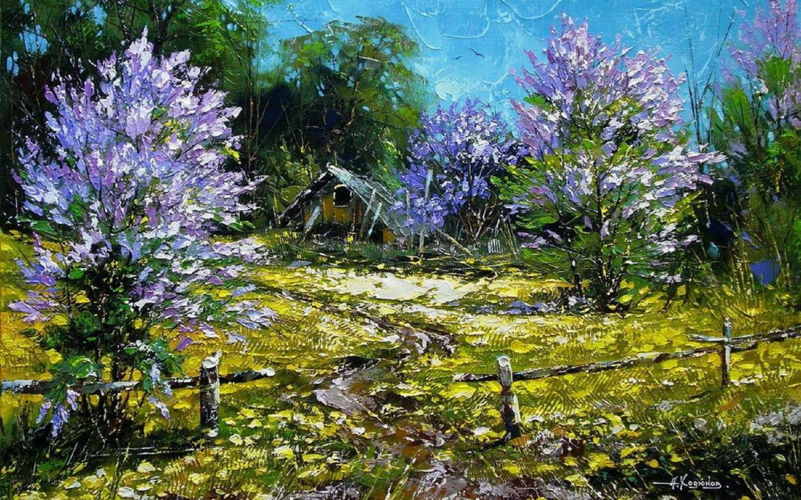

copaciii
Videoclip de stoc gratuit cu arbori, câmp, copaci

Pexels Explorează Licență Încărcare Încărcare Alătură-te Indigo Blackwood
317 de urmăritori Urmărește Donează 218 de aprecieri Colectează Descarcă gratuit VideografIndigo Blackwood
317 de urmăritori · Bulgaria
Urmărește Donează
2,62 Milioane de vizualizări
Utilizare gratuită
Distribuie Informații VideografIndigo Blackwood
317 de urmăritori · Bulgaria
Urmărește Donează Afișat în Mai multe site-uri web promovate Informații despre videoclip Încărcată la 21 Noiembrie 2018 Rezoluție 1920px x 1080px (Full HD) Duration 0:21 Cadre pe secundă 25 Raport de aspect 16:9 Licență ✓ Utilizare gratuită. ✓ Fără atribuire necesară. Află mai multe despre licență » Ascunde informațiileVideoclipuri similare
Dhyamis Kleber Wayne Speedy Henrikas Mackevicius Mike Dhyamis Kleber Kelly Lacy Adailton Batista SebisSPORT TRAVEL Kapaw Videas Cl SwissHumanity Egor Kunovsky Michelle Gorka ROMAN ODINTSOV Jozef Papp winrood lee Anteriorul 1 2 3 4 5 6 7 8 9 … 499 500 Următorul Încarcă mai multeEtichete asociate
arbori câmp copaci iarbă întins luncă natură pășune peisaj teren agricol vast verdeMulțumește-i fotografului Indigo
Creatorii noștri sunt foarte interesați să îți afle părerea și să vadă cum le-ai folosit fotografiile. Îți poți arăta aprecierea prin donații, prin Tweeturi sau urmărindu-i!
Donează Mulțumește pe TwitterDistribuie videoclipul
Twitter Facebook Pinterest Tumblr LinkedIn EmailSetează un link la acest videoclip. Poți folosi următorul text:
Videoclip creat de Indigo Blackwood , de la Pexels Copiază Înregistrează-te pentru a salva istoricul descărcărilor. Alătură-te pe Pexels Dacă descărcarea nu a pornit automat, fă clic aici Imagini de stoc gratuite Videoclipuri gratuite Colecții Provocări Clasament Pexels Despre Blog Întrebări frecvente Fii un erou Devino partener Pexels! API/Dezvoltatori Aplicații și pluginuri Pexels pentru iOS Pexels pentru Android Alte pluginuri și aplicații Imagini de stoc gratuite Căutări populare Fotografie alb-negru Imagini aniversare Videoclipuri gratuite de business Imagini de Anul Nou Tapet frumos Cele mai bune imagini de fundal HD Imagini de fundal Fundal galaxy Fundal ecran de blocare Wallpaper de iphone Wallpaper 4k Tapet samsung Tapet despre dragoste Wallpaper pentru mobil Pexels – fotografii frumoase gratuite prin contribuția comunității noastre talentate. Condițiile de utilizare Politica de confidențialitate Licență Numele editorului Română Se încarcă… Se încarcă… Choose your language: English Português Español Català Deutsch Italiano Français Svenska Bahasa Indonesia Polski 日本語 繁體中文 简体中文 한국어 ภาษาไทย Nederlands Magyar Tiếng Việt Čeština Dansk Suomi Українська Ελληνικά Română Norsk Slovenčina Türkçe Русский ✕ Pentru a îmbunătăți experiența ta de utilizator, folosim module cookie . OK317 de urmăritori Urmărește Donează 218 de aprecieri Colectează Descarcă gratuit Fotograf
317 de urmăritori
Urmărește Donează
2,62 Milioane de vizualizări
Tu încarci. Noi edităm. Încearcă gratuit Studioul de editare Pexels.
Trimite fotografii Înainte DupăPosted by Jack  Read more
Read more  Comments (15)
Comments (15)  2020.10.01 20:36
2020.10.01 20:36